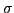

In this talk we present an efficient solution strategy for fully nonlinear free surface water waves, based on unified potential flow theory, with the bottleneck problem of solving a

-transformed Laplace problem in three dimensions at every time integration step. A geometric multigrid preconditioned defect correction scheme is used to attain high-order accurate solutions with fast convergence and scalable work effort. The numerical method is based on matrix-free finite difference approximations, implemented to run efficiently on many-core GPUs [1,2]. In this talk we present the extension of previous work, with the addition of both spatial and temporal decomposition techniques for fast simulation of large scale phenomenons, such as long distance wave propagation over varying depths or within large coastal regions. Simulations that have novel value within maritime engineering because of the tunable properties that follow from the flexible-order implementation.The architectural changes in hardware design within the last two decades, from single to multi- and many-core architectures, require software developers to identify and properly implement methods that both exploit concurrency and maintain numerical efficiency. We discuss the challenges of implementing an effective multigrid solver on modern many-core GPUs and in particular how multiple devices are used to further improve performance via distributed heterogeneous computing without compromising numerical convergence. We present a multi-block approach that decompose and numerically solve the Laplace problem within each subdomain, supporting flexible block structures to match the physical domain. Messages are sent using MPI to repeatedly update artificial boundary information between adjacent subdomains. The impact on convergence and performance scalability using the proposed multi-block strategy will be discussed.
We find that spatial domain decomposition scales well for large problems sizes, but for problems of limited sizes, the maximum attainable speedup is reached for a low number of processors, as it leads to an unfavorable communication to compute ratio. To circumvent this, we exploit the Parareal algorithm to introduce parallelism via parallel time integration. Parareal may be perceived as a two level multigrid method in time, where the numerical solution is first sequentially advanced via course integration and then updated simultaneously on multiple GPUs in a predictor-corrector fashion [3]. A parameter study is performed to establish proper choices for maximizing speedup and parallel efficiency. The parareal algorithm is found to be sensitive to a number of numerical and physical parameters, making practical speedup a matter of parameter tuning. Results are presented to confirm that it is possible to attain reasonable speedups, independently of the problem size.